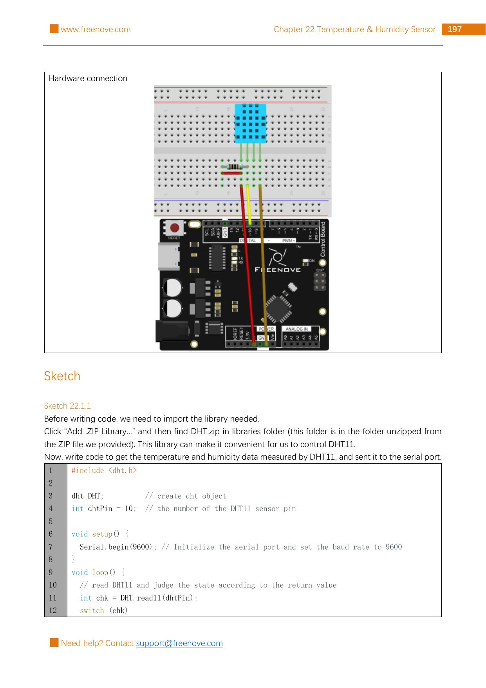

Wire the Freenove kit’s four-pin DHT11 with a 10 kΩ pull-up resistor, read it through Arduino pin 10, and print temperature and humidity once per second.
Gather the parts
Uno-compatible board and USB cable
Breadboard
1 bare, four-pin DHT11 temperature-and-humidity sensor from the Freenove kit
1 resistor marked 10 kΩ
3 male-to-male jumper wires
Important: this circuit is for the source’s bare four-pin DHT11, not a three-pin DHT module. With the vented face toward you and legs pointing down, the source labels the legs 1 VCC, 2 SDA, 3 NC, and 4 GND. Stop if your part’s labels, number of pins, or pin order differ. Use only the board’s USB-powered 5 V and GND rails; never connect wall power, a battery pack, or any higher-voltage circuit.
Build it, one check at a time
Step 1 — Read the source circuit
Keep USB unplugged. The unchanged Freenove reference page shows Project 22.1’s breadboard build and the start of its sketch. The DHT11 sends calibrated digital data through its SDA leg, so this is not an analog-input project.

Reference image: Freenove Ultimate Starter Kit, Tutorial.pdf, Chapter 22, Project 22.1, PDF page 201 / printed page 197. Rasterized unchanged from the permitted source pack under CC BY-NC-SA 3.0.
Step 2 — Place the DHT11 and make its power path
Put the DHT11 so that all four legs occupy separate breadboard rows. With its vented face toward you, connect leg 1 (VCC) → 5 V and leg 4 (GND) → GND. Leave leg 3 (NC) unconnected. Do not bend legs together or use an unlabelled sensor as a substitute.
Before you plug USB back in, trace each wire from the sensor leg label—not from a guessed leg position—to the 5 V or GND rail.
Step 3 — Add the data line and its pull-up
Connect leg 2 (SDA) → Arduino pin 10. Put the 10 kΩ resistor between that same SDA/pin-10 row and 5 V. The resistor gently holds the shared data line high when neither device is pulling it low, which lets the one-wire-style conversation begin cleanly.
Keep the resistor in this exact path: SDA to 5 V. Do not replace it with a 220 Ω LED resistor, and do not connect the DHT11 directly to a pin higher than 5 V.
Step 4 — Install the matching library
This lesson uses the exact dht.h library supplied as DHT.zip in the Freenove source pack. In Arduino IDE, choose Sketch → Include Library → Add .ZIP Library…, then select that ZIP. This matters: other libraries can use different include names and code, even when they support a part named DHT11.
After the library is installed, reconnect USB and choose your Uno-compatible board and serial port. Do not move the sensor or any jumper while the board is powered.
Step 5 — Upload, then read the room
Upload this original, source-validated sketch. It uses the source’s DHT11 library, pin 10, 9600-baud Serial Monitor, status checks, and one-second reading interval. Then open Tools → Serial Monitor and set its speed to 9600 baud.
#include <dht.h>
dht DHT;
int dhtPin = 10;
void setup() {
Serial.begin(9600);
Serial.println("Room thermometer ready!");
}
void loop() {
int status = DHT.read11(dhtPin);
switch (status) {
case DHTLIB_OK:
Serial.print("Humidity: ");
Serial.print(DHT.humidity);
Serial.print("%, Temperature: ");
Serial.print(DHT.temperature);
Serial.println(" C");
break;
case DHTLIB_ERROR_CHECKSUM:
Serial.println("DHT11 checksum error — recheck the data wire and resistor.");
break;
case DHTLIB_ERROR_TIMEOUT:
Serial.println("DHT11 timeout — recheck power, ground, and pin 10.");
break;
default:
Serial.println("DHT11 returned an unknown error.");
break;
}
delay(1000);
}
What success looks like: the monitor first says “Room thermometer ready!” and then prints a humidity percentage plus a temperature in C about once each second. A checksum or timeout message is useful evidence, not a reason to swap random wires: unplug USB, then check the DHT11’s face-forward pin order, the 5 V/GND paths, pin 10, and the 10 kΩ pull-up. The DHT11 reports a rounded environmental reading; it is a learning sensor, not a medical, safety, or laboratory instrument.
Tiny challenge
Cover the sensor loosely with your hands for a moment without bending its legs. Predict whether temperature, humidity, both, or neither might change. Then compare a few Serial Monitor lines. Which case handles a successful reading, and why is a delay useful for this slow environmental sensor?
The unchanged reference image and upstream material are from Freenove’s Ultimate Starter Kit and are used under CC BY-NC-SA 3.0. Attribution, noncommercial, and ShareAlike requirements apply.